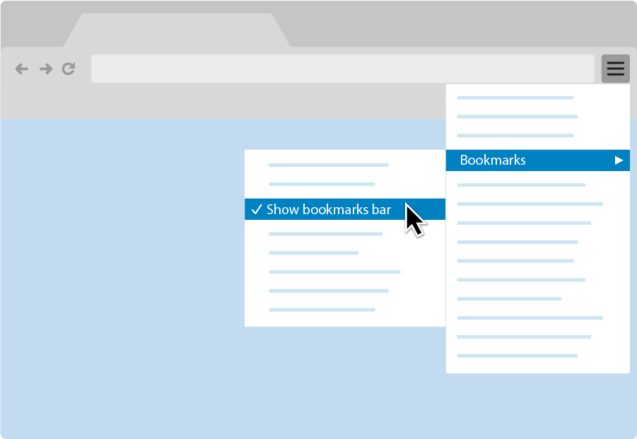

1: Setup X-Ray Goggles and install to Edit Any HTML Page!
X-Ray Goggles makes it easy to see and remix the code behind your favorite web pages. The best part: you don't need any prior coding experience! Just activate Goggles, click on a section, and edit. Then, share your remixes with others.
How to get started:
-
Open Your Bookmark Toolbar
If you're using Chrome, click the options icon to the right of your URL bar, select Bookmarks, then make sure Show bookmarks bar is selected.
Instructions for other platforms:
-
Windows:
- Chrome
- Firefox
- Internet Explorer
-
Mac:
- Chrome
- Firefox
- Safari
-
Other:
- Chrome
- Firefox
-
Windows:
-
Install X-Ray Goggles

Drag This Button To Your Bookmark Bar To Install and Download X-Ray Goggles
X-Ray Hacker -
Saving Your Work
To save your work we recommend taking a screenshot of the remixed web page.